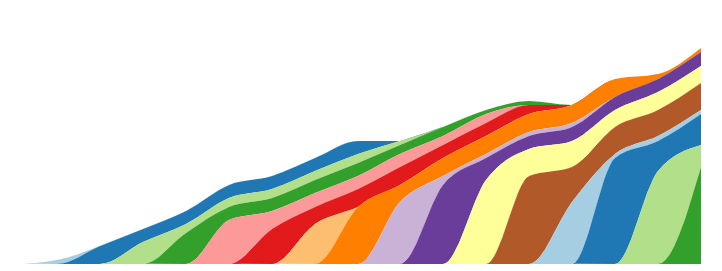

BOINC Development Status Report: February 2025

Since we are almost ready with the release, there are no big updates. There are only tiny issues left, so we expect to have the alpha release ready for testing until the end on March 2025, as it was planned. The full list of features and bugfixes will be available in the next blog post, which will be published right after the release.
Meanwhile, we have a new way of installing BOINC on Linux via Snapcraft. This is a new way of packaging and distributing software for Linux, which is similar to the AppImage format, but with some additional features. The main difference is that Snapcraft packages are installed in a separate environment, which means that they do not interfere with the system libraries or other applications. This makes it easier to install and update software without worrying about dependencies or conflicts.
At the moment, we have only nightly packages available in the 'Edge' channel. When we will be releasing the new version for alpha testing, it will be available in the 'Beta' channel. The stable version will be available in the 'Stable' channel. You can find more information about this here.